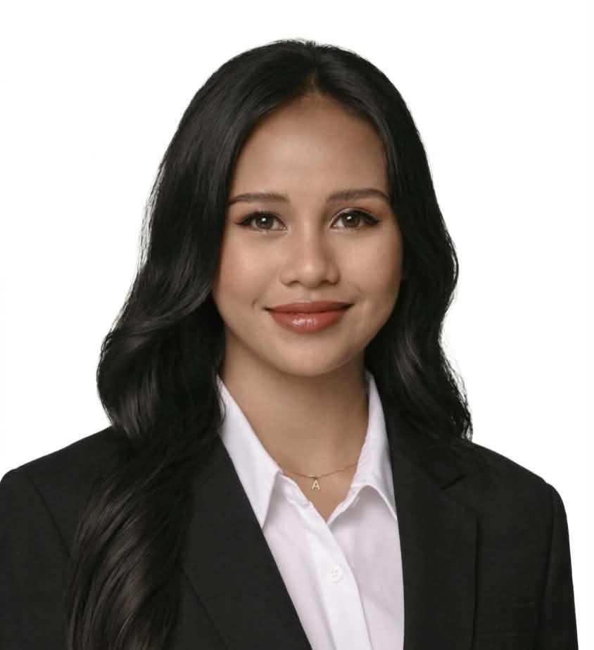
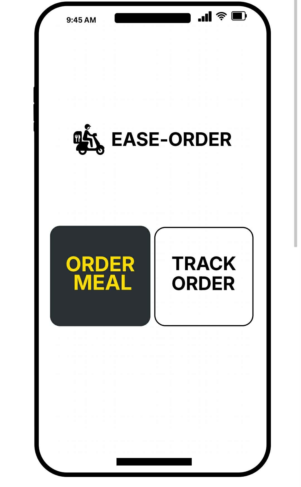

Andreia Tegio
B.S. Information Technology | Aspiring UI Designer
Passionate about creating clean, functional, and user-friendly web experiences.
About
Hello! I am Andreia Tegio, an Information Technology student with a passion for UI design. I love creating clean, attractive, and easy-to-use screen layouts for web applications. My main goal is to design simple digital experiences that solve practical problems for everyday users. I am always excited to learn new visual design ideas and bring creative interfaces to life.
Skills
Languages
- HTML
- CSS
- Java
- C++
- C#
Tools
- VS Code
- Canva
- Eclipse
- Visual Studio
Projects

Library Management System: Our team built a digital library system to help organize books and manage user accounts easily. I worked on coding the system and contributed design ideas for a clean login interface.

Ease-Order: I created a UI design tailored for users who need motor support by incorporating extra-large navigation buttons for easy reachability. The clean layout and generous target spacing significantly reduce interaction errors for individuals with limited hand mobility or tremors.
Education
[Present] | Eastern Samar State University , Borongan City
[2018-2025] | Dolores National High School
[2010-2018] | Dolores Central Elementary School
Get in Touch
Open to create a UI design. Reach out any time!
Contact Number: 09758140382